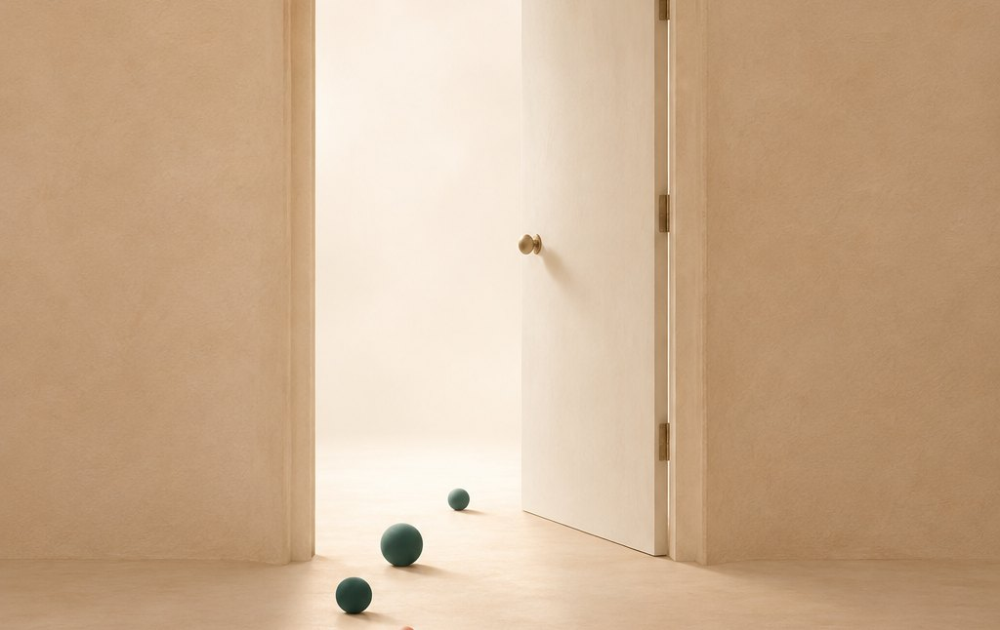
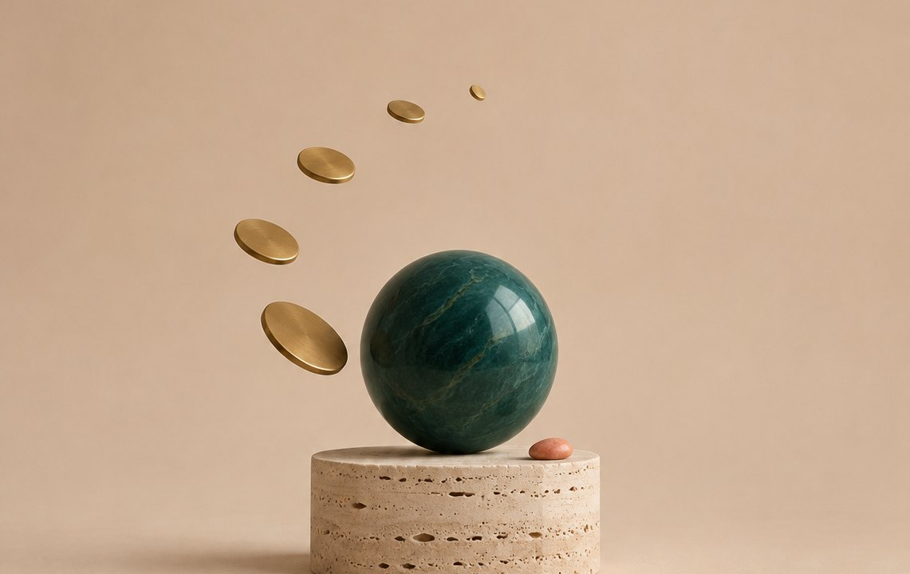

«Как за 4 дня выйти из угнетающих чувств на новый уровень дохода, реализации, отношений»
Бесконечный поток денежной энергии
- находим, куда сливался ресурс
- перекрываем утечки
- восстанавливаем силы
- ставим предохранители от откатов
Деньги идут туда, где есть энергия.

основатель Института психического здоровья

Пополняем вашу библиотеку состояний
Состояние соединения с собой.
Состояние для денежного взлёта.
Из него деньги создавать гораздо проще, чем из вины, тревоги и страха

Представим: вы проснулись, у вас 100% времени дня и 100% энергии

Напишите в чат свою цель одной фразой

Вы вроде занимаетесь своим, а фокус на внешнем
Погрузиться целиком не получается, энергия расплескалась за день.

Допустим, вчера вы поняли:
- Не хочу больше быть хорошей девочкой, тащить всё на себе
- Хочу время для себя и своего дохода

Но запал гаснет, и многие решают «это не моё»
Цветочек не успел распуститься, а его уже съели автоматизмы.

Если вам хоть чуть-чуть кажется «было бы классно» – это уже хорошо
Огонь есть, его завалило бытом и болью.
Расчищают его через проработку ТДО.

Когда вы начинаете меняться, муж поначалу обесценивает
Система тянет вас обратно, вылезают его программы и ваши.

Почему тогда стыдно оставить мужа без поглаженной рубашки?
За этим стоит «хорошая девочка» из детства.
Хотя ребёнок в 4–5 лет может сам одеться, помыться и почистить зубы.

Что дети будут с вами всегда и будут благодарны
Они вырастут, женятся и уедут.
В 12–14 лет ребёнок устаёт от гиперконтроля и начинает огрызаться.

А если ребёнок уедет в другую страну, а муж уйдёт – что вы будете делать?
Вы знаете всё обо всех, но не знаете себя.

Мы приходим в жизнь одни и уходим одни.
в сутки вы с собой.
Когда вы последний раз просто долго смотрели на себя в зеркало?

После проработки ТДО фильтр снимается
Вы чётко видите свои задачи и куда деть энергию,

Удовольствие давал хруст орехов и вафель. Не вкус, а хруст
Пересел на болгарский перец – и за неделю скинул 2 кг.

Учиться параллельно с работой
- Работа может дать первых клиентов
- Коллеги увидят ваше преображение
Кейс Ольги, инженера-конструктора

былоИнженер-конструктор. Пошла учиться, чтобы проработать свой травматический детский опыт.
сталоВзяла клиентов, доход от 200 000 ₽ в месяц. Во время обучения затеяла ремонт за 7 млн и недавно его закончила.

Вы на старте – выбирайте там, где деньги есть
Самая глупая ошибка – пойти в масс-маркет и конкурировать ценой.

Сейчас выйдут две студентки ПКТ
Уже берут клиентов за деньги –
ещё во время учёбы
Ваш путь за 4 дня
 01
01- Убираем тревогу, страх, обиду, вину, стыд
- Находим затык, который годами держал на месте
Прошлое больше вас не беспокоит
 02
02- Находим, куда утекали силы, и перекрываем утечки
- Ставим предохранители от откатов
Сил хватает на всё, откатов нет

03- Проверяем цель на истинность
- Убираем сопротивление и саботаж
Пошаговый план: подумали – сделали

04только для VIP тарифа- Переходим в состояние, где всё даётся легко
- Возможности начинают находить вас сами
Вы в состоянии «мне везёт»